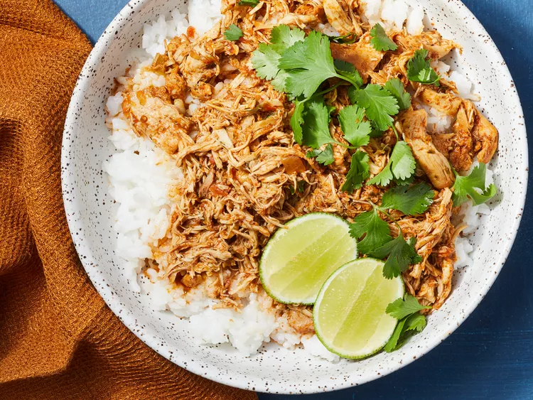

Lime Cilantro Chicken

Slow cooker cilantro-lime chicken is a flavorful and easy-to-make dish that uses a slow cooker to cook chicken with cilantro and lime,
along with other seasonings. It's perfect for tacos, providing a zesty and refreshing twist compared to plain chicken.
This slow cooker cilantro-lime chicken is bursting with flavor. Try it in tacos for a nice change from plain chicken.
Ingredients
- Chicken: Typically boneless, skinless chicken breasts or thighs.
- Cilantro: Fresh cilantro for a vibrant, herbaceous flavor.
- Lime: Fresh lime juice and sometimes zest for tanginess.
- Garlic: Minced garlic for depth of flavor.
- Spices: Commonly includes cumin, chili powder, salt, and pepper.
- Broth: Chicken broth or water to keep the chicken moist during cooking.
How to make Lime Cilantro Chicken
- Prep the Chicken: Place the chicken in the slow cooker.
- Add Flavorings: Add minced garlic, chopped cilantro, lime juice, and spices over the chicken.
- Add Liquid: Pour in a bit of chicken broth to ensure the chicken stays moist.
- Cook: Cover and cook on low for 6-8 hours or on high for 3-4 hours until the chicken is tender and easily shredded.
- Shred Chicken: Remove the chicken and shred it with two forks. Return the shredded chicken to the slow cooker and mix it with the juices and seasonings.
- Serve: Use the flavorful chicken as a filling for tacos, along with your favorite toppings like avocado, salsa, or cheese.